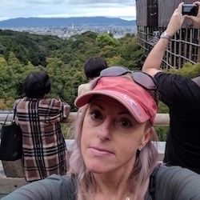

About JapanTravel
JapanTravel was established in 2010 by Rachael Colley who has lived and travelled through Japan since 2001. Over 700 guests from around the world have accompanied us to cities all over Japan.
Our tour of Tokyo and Kyoto was so memorable and comfortable. JapanTravel anticipated all of our needs and delighted us with so many surpises!
I joined a tour of Nagasaki and found myself in the company of a lovely group and an experienced guide. We enjoyed the hidden alley izakayas as well as all the sights.
JapanTravel has a network of experienced guides who have lived, worked and travelled in Japan.
Our city tours are family friendly and offer the best sights and food in Japan.
We look forward to your company!